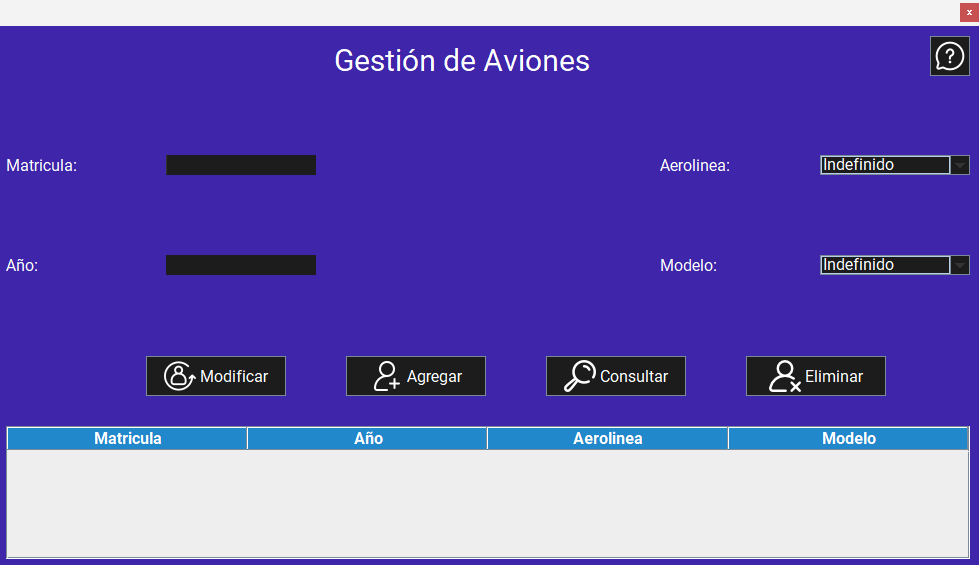
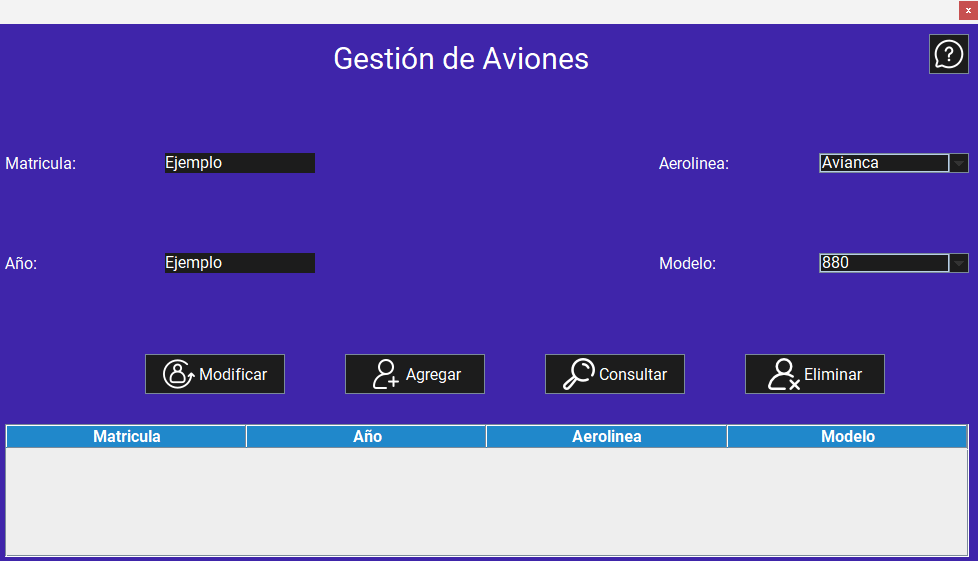
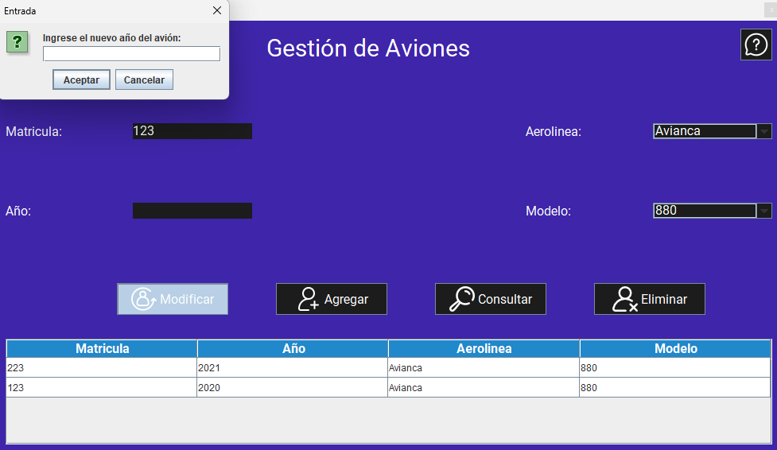
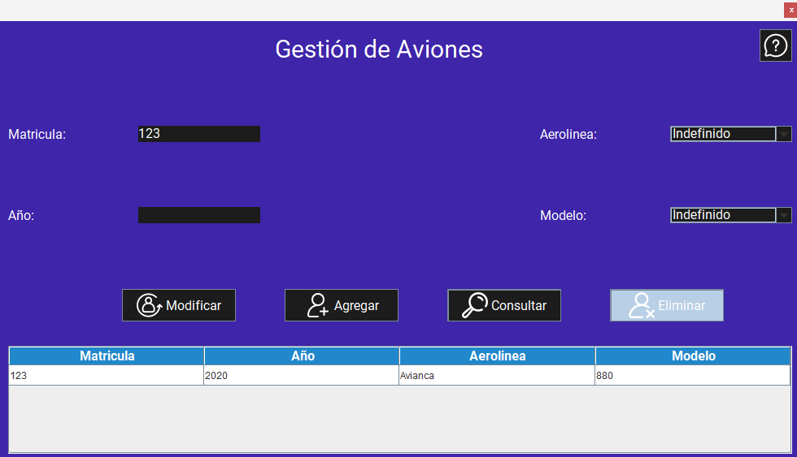

Pantalla principal:
Al iniciar la aplicación, se muestra la pantalla principal de la gestión de aviones. Esta pantalla permite agregar, modificar y eliminar aviones, así como consultar la lista de aviones registrados en el sistema.
Funcionalidades:
1. Agregar un avión
Para agregar un avión, siga estos pasos:
- Inicie la aplicación.
- Ingrese los datos en cada campo de texto (Matrícula, año, Aerolínea, Modelo).
- Haga clic en el botón "Agregar". 
Advertencias
2. Consultar un avión
Para consultar un avión, siga estos pasos:
- Inicie la aplicación.
- Si desea consultar la información de todos los aviones registrados, simplemente haga clic en el botón "Consultar".
- Si desea consultar la información de un avión específico, ingrese la matrícula del avión en el campo de texto (Matrícula).
- Haga clic en el botón "Consultar".

Advertencias
3. Modificar un avión de avión
Para modificar un avión, siga estos pasos:
- Inicie la aplicación.
- Realice una consulta del avión que desea modificar, siguiendo los pasos mencionados anteriormente.
- Ingrese los que desea modificar en cada campo de texto (Matrícula, año, Aerolínea, Modelo).
- Haga clic en el botón "Modificar". 
Advertencias:
4. Eliminar un avión
Para eliminar un avión, siga estos pasos:
- Inicie la aplicación.
- Realice una consulta del avión que desea eliminar, siguiendo los pasos mencionados anteriormente.
- Una vez que se muestre la información del avión, haga clic en el botón "Eliminar".
- Se mostrará una confirmación de eliminación, donde deberá confirmar su acción.
- Una vez confirmado, el avión será eliminado del sistema. 
Advertencia: